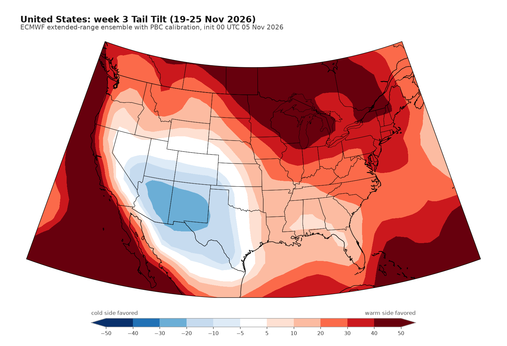

Weather Programmer / subseasonal
Week 3-6 Temperature Forecast
Chance that the week-mean temperature falls in each climatological fifth (Q1 coldest 20% through Q5 warmest 80%), from the ECMWF extended-range ensemble after probabilistic bias correction (PBC).
Loading latest init…

Grays are less likely than climatology (~20%). Colour is more likely: blue cold, purple middle, red warm. Open the PNG for the full figure, including the raw-ensemble lean inset.
Tail Tilt
P(warmest 20%) minus P(coldest 20%). Blue where the cold tail is favored, red where the warm tail is; near white when the two are similar.

One number per place: which extreme side wins. Near zero can mean both tails near climatology, or both elevated by similar amounts.
How to read the maps
Each quintile figure is five panels for one region and one forecast week. Week 3 is the third week after the forecast is issued, week 4 the fourth, and so on through week 6. The dates for the week you have selected are shown above the map. Tail Tilt compresses the same probabilities into P(Q5) − P(Q1) so the favored extreme stands out on one map.
The raw ECMWF ensemble is already turned into quintile probabilities against its own hindcast climate. Probabilistic bias correction (PBC) then averages two adjustments: Debias++, which removes typical probability errors at this lead and time of year, and Persistence++, which nudges those probabilities using the latest observed week. That blend is from Guan, Mouatadid et al. (2026) in Nature; Microsoft Research has a short account of the method.